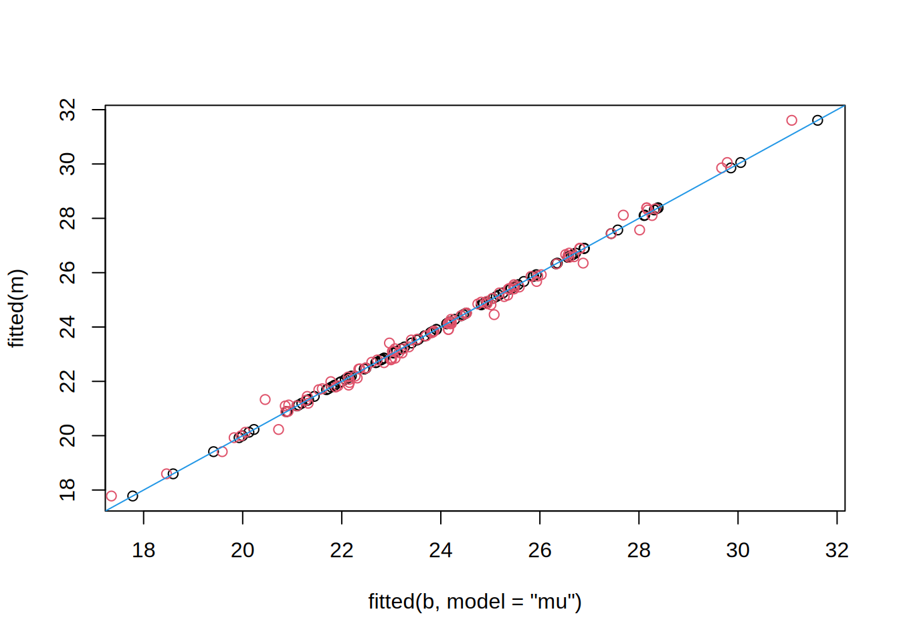
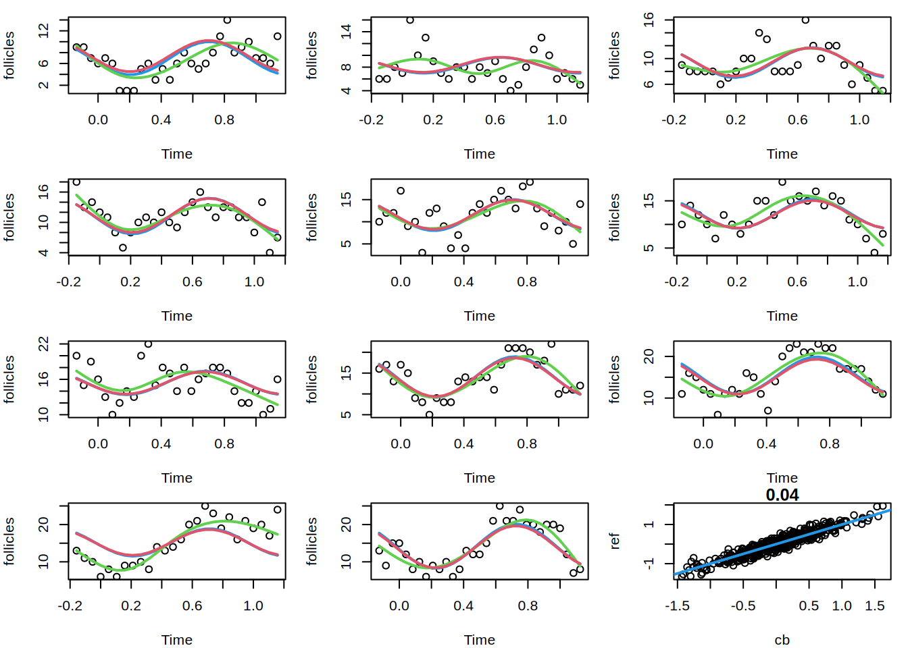

library("gamlss2")
## orthdontic measurement data
data("Orthodont", package = "nlme")
## model using lme()
m <- lme(distance ~ I(age-11), data = Orthodont,
random =~ I(age-11) | Subject, method = "ML")
## using re(), function I() is not supported,
## please transform all variables in advance
Orthodont$age11 <- Orthodont$age - 11
## estimation using the re() constructor,
## setup formula first
f <- distance ~ age11 + re(~age11|Subject)
## estimate model
b <- gamlss2(f, data = Orthodont)GAMLSS-RS iteration 1: Global Deviance = 326.6623 eps = 0.392353
GAMLSS-RS iteration 2: Global Deviance = 326.6623 eps = 0.000000 ## compare fitted values
plot(fitted(b, model = "mu"), fitted(m))
abline(0, 1, col = 4)## extract summary for re() model term
st <- specials(b, model = "mu", term = "age11", elements = "model")
summary(st)Linear mixed-effects model fit by maximum likelihood
Data: structure(list(age11 = c(-3, -1, 1, 3, -3, -1, 1, 3, -3, -1, 1, 3, -3, -1, 1, 3, -3, -1, 1, 3, -3, -1, 1, 3, -3, -1, 1, 3, -3, -1, 1, 3, -3, -1, 1, 3, -3, -1, 1, 3, -3, -1, 1, 3, -3, -1, 1, 3, -3, -1, 1, 3, -3, -1, 1, 3, -3, -1, 1, 3, -3, -1, 1, 3, -3, -1, 1, 3, -3, -1, 1, 3, -3, -1, 1, 3, -3, -1, 1, 3, -3, -1, 1, 3, -3, -1, 1, 3, -3, -1, 1, 3, -3, -1, 1, 3, -3, -1, 1, 3, -3, -1, 1, 3, -3, -1, 1, 3), Subject = structure(c(15L, 15L, 15L, 15L, 3L, 3L, 3L, 3L, 7L, 7L, 7L, 7L, 14L, 14L, 14L, 14L, 2L, 2L, 2L, 2L, 13L, 13L, 13L, 13L, 5L, 5L, 5L, 5L, 6L, 6L, 6L, 6L, 11L, 11L, 11L, 11L, 16L, 16L, 16L, 16L, 4L, 4L, 4L, 4L, 8L, 8L, 8L, 8L, 9L, 9L, 9L, 9L, 10L, 10L, 10L, 10L, 12L, 12L, 12L, 12L, 1L, 1L, 1L, 1L, 20L, 20L, 20L, 20L, 23L, 23L, 23L, 23L, 25L, 25L, 25L, 25L, 26L, 26L, 26L, 26L, 21L, 21L, 21L, 21L, 19L, 19L, 19L, 19L, 22L, 22L, 22L, 22L, 24L, 24L, 24L, 24L, 18L, 18L, 18L, 18L, 17L, 17L, 17L, 17L, 27L, 27L, 27L, 27L), levels = c("M16", "M05", "M02", "M11", "M07", "M08", "M03", "M12", "M13", "M14", "M09", "M15", "M06", "M04", "M01", "M10", "F10", "F09", "F06", "F01", "F05", "F07", "F02", "F08", "F03", "F04", "F11"), class = c("ordered", "factor")), response_z = c(3.95740740740771, 1.63703703703704, 4.31666666666667, 4.9962962962963, -0.542592592592602, -0.862962962962968, -1.68333333333333, 0.496296296296297, 0.957407407407398, -0.862962962962968, -0.683333333333334, 1.4962962962963, 3.4574074074074, 4.13703703703703, 1.81666666666666, 0.996296296296297, -2.0425925925926, 0.137037037037032, -2.18333333333333, -0.00370370370369955, 2.4574074074074, 2.13703703703704, 2.31666666666666, 2.4962962962963, -0.0425925925926016, -1.36296296296297, -0.183333333333334, 0.496296296296297, 1.9574074074074, -1.86296296296297, -0.183333333333334, -0.5037037037037, 0.957407407407398, -2.86296296296297, 6.31666666666666, -0.00370370370369955, 5.45740740740739, 4.63703703703703, 6.31666666666666, 5.49629629629629, 0.957407407407398, -0.362962962962968, -1.18333333333333, -1.0037037037037, -0.542592592592602, 0.137037037037032, -0.683333333333334, 1.9962962962963, -5.0425925925926, 1.13703703703703, 1.31666666666667, 3.4962962962963, 0.457407407407402, 2.13703703703704, 0.81666666666667, -0.00370370370369955, 0.957407407407402, 1.13703703703703, 1.31666666666667, 3.9962962962963, -0.0425925925926016, -1.86296296296297, -1.18333333333333, -1.0037037037037, -1.0425925925926, -3.36296296296297, -3.18333333333333, -3.0037037037037, -1.0425925925926, -1.86296296296297, -0.683333333333334, -0.5037037037037, -1.5425925925926, 0.637037037037032, -0.183333333333334, -0.00370370370369955, 1.4574074074074, 1.13703703703703, 0.316666666666666, 0.496296296296297, -0.542592592592602, -0.362962962962968, -2.18333333333333, -2.5037037037037, -2.0425925925926, -2.36296296296297, -3.68333333333334, -3.5037037037037, -0.542592592592602, -0.862962962962968, -1.68333333333333, -1.0037037037037, 0.957407407407398, -0.362962962962968, -1.18333333333333, -2.0037037037037, -2.04259259259261, -2.36296296296297, -2.68333333333333, -4.5037037037037, -5.5425925925926, -4.36296296296297, -5.68333333333334, -6.5037037037037, 2.4574074074074, 1.63703703703704, 3.31666666666666, 1.9962962962963), weights_w = c(0.116596837376369, 0.116596837376369, 0.116596837376369, 0.116596837376369, 0.116596837376369, 0.116596837376369, 0.116596837376369, 0.116596837376369, 0.116596837376369, 0.116596837376369, 0.116596837376369, 0.116596837376369, 0.116596837376369, 0.116596837376369, 0.116596837376369, 0.116596837376369, 0.116596837376369, 0.116596837376369, 0.116596837376369, 0.116596837376369, 0.116596837376369, 0.116596837376369, 0.116596837376369, 0.116596837376369, 0.116596837376369, 0.116596837376369, 0.116596837376369, 0.116596837376369, 0.116596837376369, 0.116596837376369, 0.116596837376369, 0.116596837376369, 0.116596837376369, 0.116596837376369, 0.116596837376369, 0.116596837376369, 0.116596837376369, 0.116596837376369, 0.116596837376369, 0.116596837376369, 0.116596837376369, 0.116596837376369, 0.116596837376369, 0.116596837376369, 0.116596837376369, 0.116596837376369, 0.116596837376369, 0.116596837376369, 0.116596837376369, 0.116596837376369, 0.116596837376369, 0.116596837376369, 0.116596837376369, 0.116596837376369, 0.116596837376369, 0.116596837376369, 0.116596837376369, 0.116596837376369, 0.116596837376369, 0.116596837376369, 0.116596837376369, 0.116596837376369, 0.116596837376369, 0.116596837376369, 0.116596837376369, 0.116596837376369, 0.116596837376369, 0.116596837376369, 0.116596837376369, 0.116596837376369, 0.116596837376369, 0.116596837376369, 0.116596837376369, 0.116596837376369, 0.116596837376369, 0.116596837376369, 0.116596837376369, 0.116596837376369, 0.116596837376369, 0.116596837376369, 0.116596837376369, 0.116596837376369, 0.116596837376369, 0.116596837376369, 0.116596837376369, 0.116596837376369, 0.116596837376369, 0.116596837376369, 0.116596837376369, 0.116596837376369, 0.116596837376369, 0.116596837376369, 0.116596837376369, 0.116596837376369, 0.116596837376369, 0.116596837376369, 0.116596837376369, 0.116596837376369, 0.116596837376369, 0.116596837376369, 0.116596837376369, 0.116596837376369, 0.116596837376369, 0.116596837376369, 0.116596837376369, 0.116596837376369, 0.116596837376369, 0.116596837376369)), terms = ~age11 + Subject, row.names = c(NA, 108L), class = "data.frame")
AIC BIC logLik
449.2116 462.6223 -219.6058
Random effects:
Formula: ~age11 | Subject
Structure: General positive-definite, Log-Cholesky parametrization
StdDev Corr
(Intercept) 2.0906352 (Intr)
age11 0.2149235 0.521
Residual 3.8365552
Variance function:
Structure: fixed weights
Formula: ~weights_w
Fixed effects: response_z ~ 1
Value Std.Error DF t-value p-value
(Intercept) 6.064444e-16 0.4048917 81 1.497794e-15 1
Standardized Within-Group Residuals:
Min Q1 Med Q3 Max
-3.305976369 -0.487428882 0.007598099 0.482237876 3.922787577
Number of Observations: 108
Number of Groups: 27 ## random intercepts and slopes with s() using AIC
a <- gamlss2(distance ~ s(age,k=3) + s(Subject, bs = "re") + s(Subject, age11, bs = "re"),
data = Orthodont)GAMLSS-RS iteration 1: Global Deviance = 427.4959 eps = 0.204786
GAMLSS-RS iteration 2: Global Deviance = 370.4092 eps = 0.133537
GAMLSS-RS iteration 3: Global Deviance = 359.2388 eps = 0.030156
GAMLSS-RS iteration 4: Global Deviance = 334.4933 eps = 0.068883
GAMLSS-RS iteration 5: Global Deviance = 322.9829 eps = 0.034411
GAMLSS-RS iteration 6: Global Deviance = 318.4793 eps = 0.013943
GAMLSS-RS iteration 7: Global Deviance = 316.8577 eps = 0.005091
GAMLSS-RS iteration 8: Global Deviance = 316.2913 eps = 0.001787
GAMLSS-RS iteration 9: Global Deviance = 316.0977 eps = 0.000611
GAMLSS-RS iteration 10: Global Deviance = 316.0301 eps = 0.000213
GAMLSS-RS iteration 11: Global Deviance = 316.0073 eps = 0.000072
GAMLSS-RS iteration 12: Global Deviance = 315.9972 eps = 0.000031
GAMLSS-RS iteration 13: Global Deviance = 315.9945 eps = 0.000008 ## compare fitted values
plot(fitted(b, model = "mu"), fitted(m))
points(fitted(a, model = "mu"), fitted(m), col = 2)
abline(0, 1, col = 4)
## more complicated correlation structures.
data("Ovary", package = "nlme")
## ARMA model
m <- lme(follicles ~ sin(2 * pi * Time) + cos(2 * pi * Time), data = Ovary,
random = pdDiag(~sin(2*pi*Time)), correlation = corARMA(q = 2))
## now with gamlss2(), transform in advance
Ovary$sin1 <- sin(2 * pi * Ovary$Time)
Ovary$cos1 <- cos(2 * pi * Ovary$Time)
## model formula
f <- follicles ~ sin1 + cos1 +
re(~ 1 | Mare) +
re(~ sin1 - 1 | Mare, correlation = corARMA(q = 2))
## estimate model
b <- gamlss2(f, data = Ovary)GAMLSS-RS iteration 1: Global Deviance = 1561.4397 eps = 0.164702
GAMLSS-RS iteration 2: Global Deviance = 1561.3891 eps = 0.000032
GAMLSS-RS iteration 3: Global Deviance = 1561.3816 eps = 0.000004 ## smooth random effects
f <- follicles ~ ti(Time) + ti(Mare, bs = "re") +
ti(Mare, Time, bs = c("re", "cr"), k = c(11, 5))
g <- gamlss2(f, data = Ovary)GAMLSS-RS iteration 1: Global Deviance = 1522.1073 eps = 0.185743
GAMLSS-RS iteration 2: Global Deviance = 1436.5015 eps = 0.056241
GAMLSS-RS iteration 3: Global Deviance = 1426.6605 eps = 0.006850
GAMLSS-RS iteration 4: Global Deviance = 1425.7658 eps = 0.000627
GAMLSS-RS iteration 5: Global Deviance = 1425.684 eps = 0.000057
GAMLSS-RS iteration 6: Global Deviance = 1425.6744 eps = 0.000006 ## compare fitted values
par(mfrow = n2mfrow(nlevels(Ovary$Mare)), mar = c(4, 4, 1, 1))
for(j in levels(Ovary$Mare)) {
ds <- subset(Ovary, Mare == j)
plot(follicles ~ Time, data = ds)
f <- fitted(b, model = "mu")[Ovary$Mare == j]
lines(f ~ ds$Time, col = 4, lwd = 2)
f <- fitted(g, model = "mu")[Ovary$Mare == j]
lines(f ~ ds$Time, col = 3, lwd = 2)
f <- fitted(m)[Ovary$Mare == j]
lines(f ~ ds$Time, col = 2, lwd = 2)
}
## simulated data
set.seed(1328)
n <- 10000
k <- 500
## generate random effects
f <- as.factor(sample(1:k, size = n, replace = TRUE))
ref <- rnorm(k, sd = 0.6)
## random effects only for sigma
y <- rBCT(n, mu = 10, sigma = exp(-1 + ref[f]), tau = 10)
## estimate model
b <- gamlss2(y ~ 1 | re(~ 1 | f), family = BCT)GAMLSS-RS iteration 1: Global Deviance = 54284.8778 eps = 0.443825
GAMLSS-RS iteration 2: Global Deviance = 53798.1163 eps = 0.008966
GAMLSS-RS iteration 3: Global Deviance = 53767.8702 eps = 0.000562
GAMLSS-RS iteration 4: Global Deviance = 53761.3751 eps = 0.000120
GAMLSS-RS iteration 5: Global Deviance = 53758.2934 eps = 0.000057
GAMLSS-RS iteration 6: Global Deviance = 53757.5692 eps = 0.000013
GAMLSS-RS iteration 7: Global Deviance = 53756.9982 eps = 0.000010
GAMLSS-RS iteration 8: Global Deviance = 53756.5246 eps = 0.000008 ## extract fitted random effects
cb <- coef(b, full = TRUE)
cb <- cb[grepl("re", names(cb), fixed = TRUE)]
## compare
plot(cb, ref, main = round(mean((cb - ref)^2), 2))
abline(0, 1, lwd = 2, col = 4)